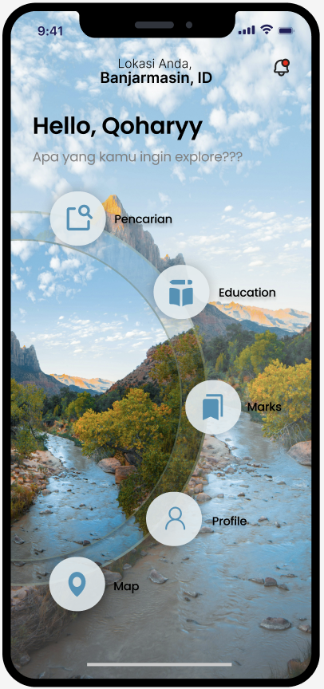
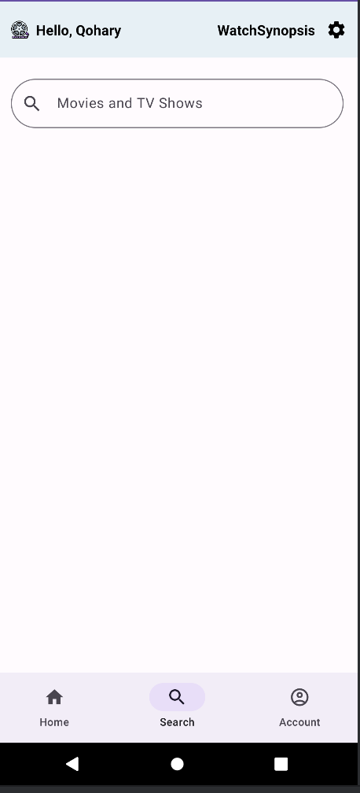
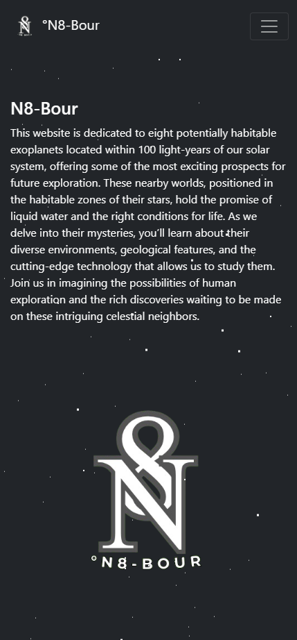

<section class="projects" id="projects">
    <div class="container">
      <h2>My Projects</h2>
      <div class="project-list">
        <div class="project-item">
          <a href="https://www.figma.com/design/XKCvr4qUjFVfN0DMWYCkI4/UX-Spontan?node-id=10-9&t=puyYiOsRQtJESnNF-1"></a>
          <h3>TripTrove</h3>
          <p>Tampilan UX TripTrove untuk pengikutan lomba Gemastik</p>
        </div>
        <div class="project-item">
          <a href="https://github.com/QOHARY/WatchSynopsis"></a>
          <h3>WatchSynopsis</h3>
          <p>Mengerjakan Project Akhir pada sebuah Mata Kualih Pemrograman Mobile untuk Pembuatan Applikasi Mobile menggunakan API</p>
        </div>
        <div class="project-item">
          <a href="https://n8-bour.vercel.app/"></a>
          <h3>N8-Bour</h3>
          <p>N8-Bour website tentang 8 Exo Planet untuk pengikutan lomba NASA Challenge</p>
        </div>
      </div>
    </div>
  </section>